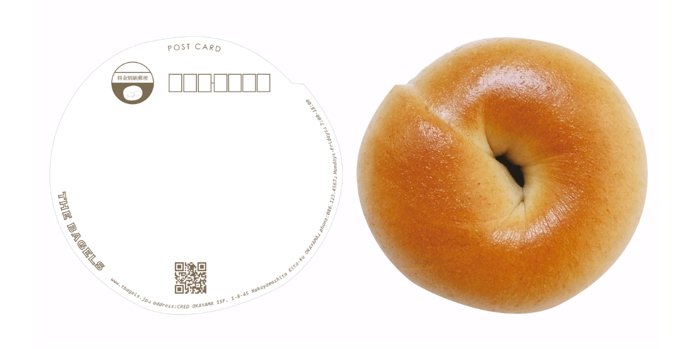
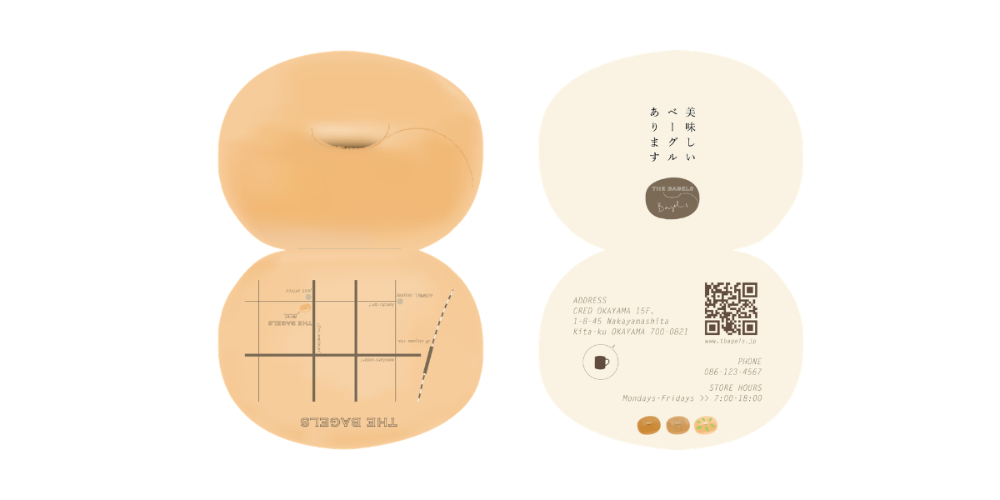
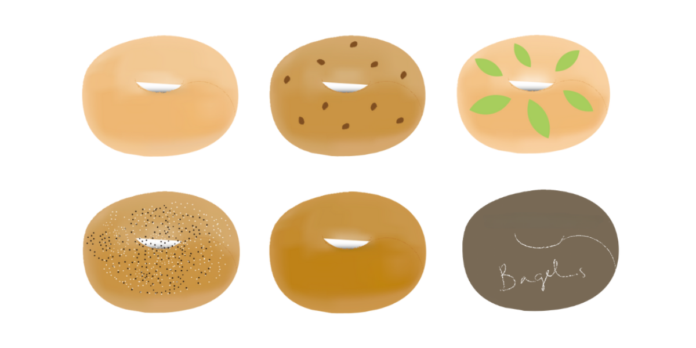
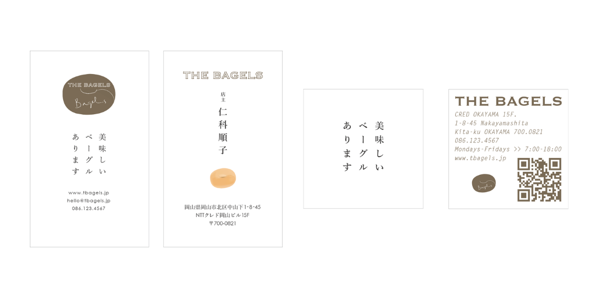
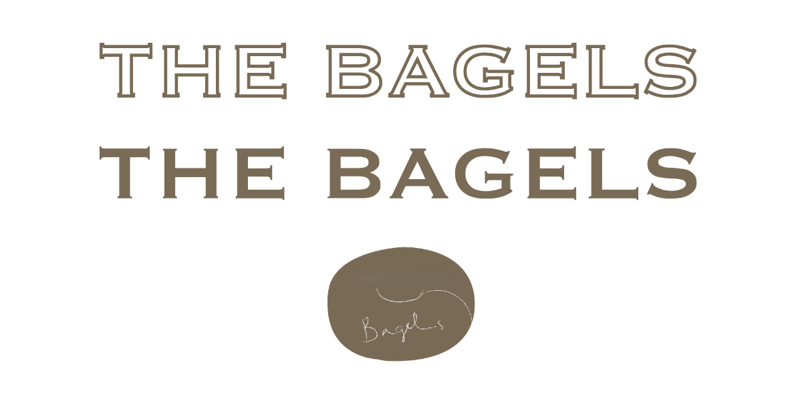
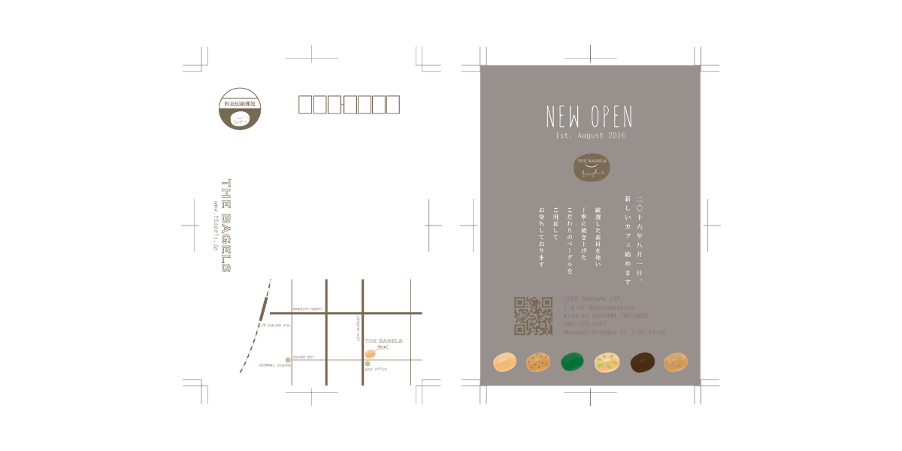
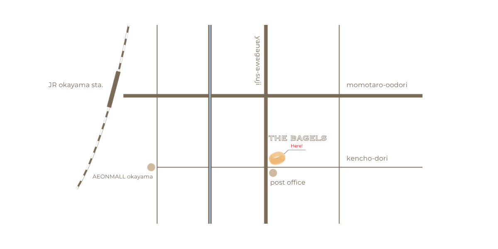

Graphic
THE BAGELS
「ベーグルショップが開業するにあたり、デザイン一式を依頼される」という架空の設定で、ウェブサイトをはじめ、ロゴデザインやショップカードなどの印刷物を制作しました。







この作品について
Project
THE BAGELS
Tool
Studio / Adobe Illustrator / Photoshop
Design Concept
ウェブサイトでは、ファーストビューにベーグルを大きくフィーチャーし、見た瞬間に心が躍るようなインパクトを与えられるデザインに。ベーグルそのものの魅力を最大限に引き出し、一目見て「お店に行ってみたい！」と思っていただけるようなイメージを目指しました。
印刷物などに使用したベーグルのイラストは、写真をトレースしてからそれぞれ色付けし、可愛らしさを意識しながら美味しそうに描ける様に一つ一つ丁寧に作りました。
ベーグルの美味しさや魅力をしっかりと感じてもらい、訪れるたびに期待感が高まるようなビジュアルに仕上げました。